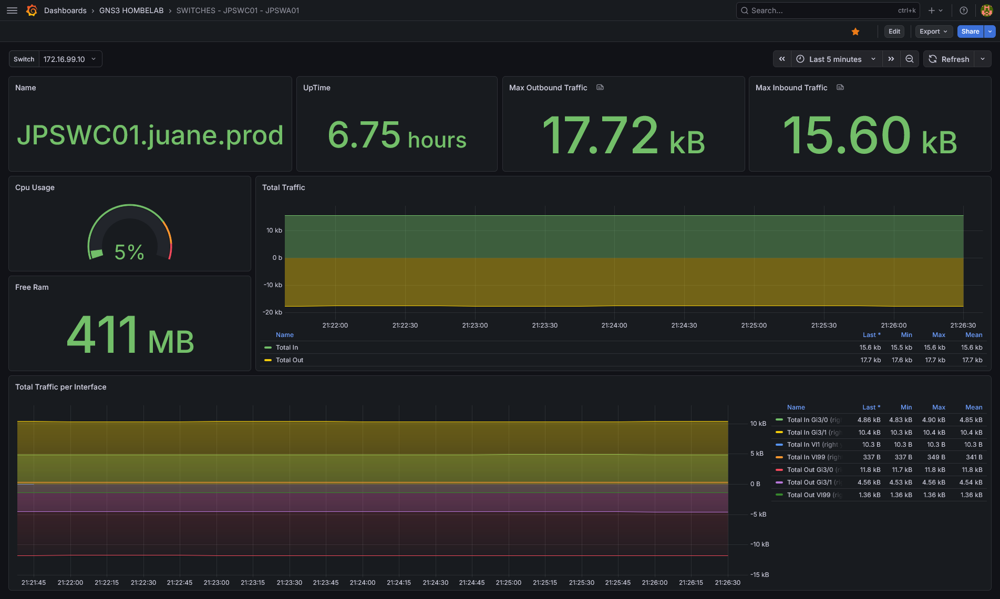
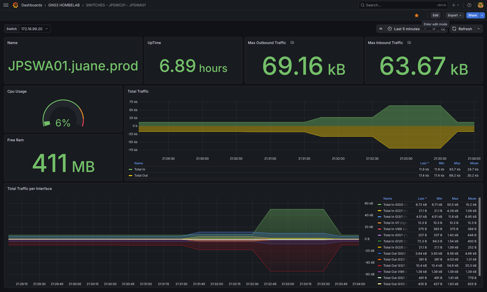

Grafana & Prometheus
URL de Acceso:
https://grafana.js-lab-uy.duckdns.org
Este stack proporciona Observabilidad de la red. A diferencia de Uptime Kuma (que solo verifica si un equipo responde), este sistema recolecta métricas históricas detalladas: consumo de ancho de banda, carga de CPU por núcleo, uso de memoria RAM y estabilidad de las peticiones SNMP.
Este servicio se ejecuta en una instancia de Oracle Cloud Infrastructure (OCI), fuera de la red local en GNS3 del laboratorio.
La conexión con los dispositivos locales se realiza a través de un túnel Tailscale.
1. Propósito (Observabilidad Detallada)
Grafana y Prometheus nos permiten ir más allá de un simple "UP/DOWN". Podemos visualizar tendencias históricas, identificar picos de tráfico, monitorear la salud de los dispositivos y detectar anomalías en el rendimiento. Prometheus actúa como el sistema de recolección y almacenamiento de métricas, mientras que Grafana se encarga de la visualización y creación de dashboards personalizados.
2. Arquitectura de Red
- No hay puertos expuestos a Internet: Los puertos 3000 (Grafana) y 9090 (Prometheus) no están abiertos en el firewall de Oracle.
- Acceso Público y VPN: Para ver los dashboards en grafana se expone publicamente el endpoint
https://grafana.js-lab-uy.duckdns.org, mientras que para acceder a prometheus y snmp exporter, es obligatorio estar conectado a la red Tailscale. - Recolección de Datos: Prometheus (en la nube) alcanza las IPs privadas de la LAN (
192.168.1.x) enrutando el tráfico a través del nodo Tailscale local (Subnet Router).
3. Dashboards Personalizados
Se han creado dashboards personalizados en Grafana para visualizar métricas clave de los dispositivos de red:

{kind=link}

{kind=link}
Info
Estos dashboards muestran métricas como el tráfico de interfaces, nombre del dispositivo, memoria RAM utilizada, uso del CPU, tiempo de encendido y maximos picos de entrada y salida de tráfico. Esto nos permite monitorear la salud y el rendimiento de los dispositivos en tiempo real y a lo largo del tiempo, facilitando la identificación de problemas potenciales antes de que se conviertan en críticos.
4. Despliegue (Docker) y Configuración
Grafana y Prometheus se ejecutan como contenedores Docker en una instancia de Oracle Cloud
Infrastructure (OCI). La configuración de cada servicio se gestiona a través de archivos docker-compose.yml y archivos de configuración específicos para Prometheus y Grafana.
services:
prometheus:
image: prom/prometheus:v3.9.1
container_name: prometheus
ports:
- 9090:9090
volumes:
- ./prometheus:/etc/prometheus
- ./prometheus-data:/prometheus
command: "--config.file=/etc/prometheus/prometheus.yml"
restart: unless-stopped
networks:
- monitoring_network
networks:
monitoring_network:
driver: bridge
name: monitoring_network
4.1 Configuración de Prometheus
El archivo prometheus.yml define los "targets" que Prometheus monitorea. En este caso, se han configurado targets para monitorear los dispositivos de la red local a través del nodo Tailscale:
global:
scrape_interval: 30s
scrape_configs:
# JOB 1: Equipos VyOS y PfSense
- job_name: 'Vyos and PfSense'
scrape_interval: 60s # Escanea cada 1 minuto (menos carga al CPU de GNS3)
scrape_timeout: 30s
static_configs:
- targets:
- 10.255.255.1
- 192.168.1.1
metrics_path: /snmp
params:
auth: [public_v2]
module: [nix_device]
relabel_configs:
- source_labels: [__address__]
target_label: __param_target
- source_labels: [__param_target]
target_label: instance
- target_label: __address__
replacement: snmp-exporter:9116
# JOB 2: Equipos Cisco
- job_name: 'Router Cisco'
static_configs:
- targets:
- 10.255.255.2
metrics_path: /snmp
params:
auth: [public_v2]
module: [cisco_device]
relabel_configs:
- source_labels: [__address__]
target_label: __param_target
- source_labels: [__param_target]
target_label: instance
- target_label: __address__
replacement: snmp-exporter:9116
# JOB 3: Equipos Cisco
- job_name: 'Switches Cisco'
scrape_interval: 60s
scrape_timeout: 30s
static_configs:
- targets:
- 172.16.99.10
- 172.16.99.20
metrics_path: /snmp
params:
auth: [public_v2]
module: [cisco_device]
relabel_configs:
- source_labels: [__address__]
target_label: __param_target
- source_labels: [__param_target]
target_label: instance
- target_label: __address__
replacement: snmp-exporter:9116
Info
los parametros targets corresponden a las IPs privadas de los dispositivos en la LAN, que Prometheus alcanza a través del nodo Tailscale local (Subnet Router). El módulo nix_device se utiliza para VyOS y PfSense, mientras que el módulo cisco_device se aplica a los dispositivos Cisco.
4.2 Configuración del SNMP Exporter
El SNMP Exporter es el componente que traduce las consultas SNMP a métricas que Prometheus puede recolectar. Se ejecuta en un contenedor Docker separado en el puerto 9116 y actúa como intermediario entre Prometheus y los dispositivos de red.
services:
snmp-exporter:
container_name: snmp-exporter
image: prom/snmp-exporter:v0.30.1
ports:
- 9116:9116
volumes:
- ./config:/etc/snmp-exporter
command: --config.file=/etc/snmp-exporter/snmp.yml
restart: unless-stopped
networks:
- monitoring_network
networks:
monitoring_network:
external: true
Note
El archivo snmp.yml define los módulos de SNMP para diferentes tipos de dispositivos. Por ejemplo, el módulo cisco_device incluye OIDs específicos para recolectar métricas de routers y switches Cisco, mientras que el módulo nix_device se enfoca en métricas relevantes para VyOS y PfSense.
4.3 Configuración de Grafana
Grafana también se despliega como un contenedor Docker y se conecta a la misma red docker de Prometheus para acceder a las métricas.
services:
grafana:
image: grafana/grafana:12.4.0-20904407122-ubuntu
container_name: grafana
restart: unless-stopped
ports:
- '3000:3000'
environment:
GF_RENDERING_SERVER_URL: http://grafana-image-renderer:8081/render
GF_RENDERING_CALLBACK_URL: http://grafana:3000/
volumes:
- grafana-storage:/var/lib/grafana
networks:
- monitoring_network
volumes:
grafana-storage: {}
networks:
monitoring_network:
external: true
5. Conceptos Clave:
- SNMP Exporter: Componente que traduce las consultas SNMP a métricas que Prometheus puede recolectar, permitiendo monitorear dispositivos de red que solo exponen métricas a través de SNMP.
- OID (Object Identifier): Identificadores únicos utilizados en SNMP para referirse a métricas específicas de dispositivos de red.
- MIBs (Management Information Base): Estructuras de datos que describen las métricas disponibles en un dispositivo SNMP, organizadas jerárquicamente bajo OIDs.
- Módulos de SNMP: Configuraciones específicas en el SNMP Exporter que definen qué OIDs consultar para diferentes tipos de dispositivos (ej.
cisco_devicepara Cisco,nix_devicepara VyOS/PfSense).